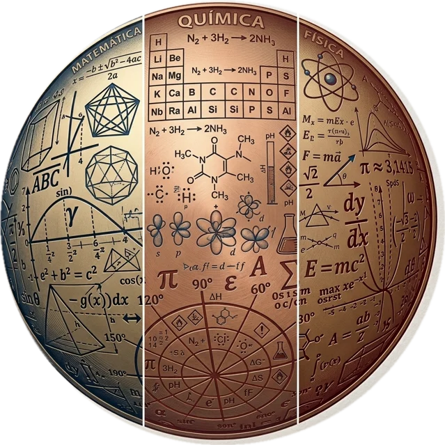
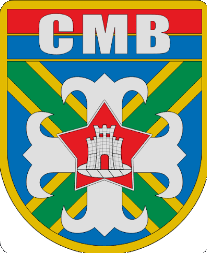

Prof. Jorge Basílio
Aulas particulares on-line de Matemática, Física e Química
Cada conteúdo explicado passo a passo, do mais simples ao mais complexo, e todo o material da aula disponível para você revisar quando quiser.

ESTUDAR É BÁSICO, APRENDER É FUNDAMENTALProf. Jorge Basílio
Como funcionam as aulas
Combine o horário
Chame no WhatsApp, diga a matéria e o conteúdo que você precisa e marcamos a aula.
Aula ao vivo no Meet
No horário, clique em “Entrar na aula ao vivo”. A explicação é passo a passo, sem pular etapas.
Revise na Área do aluno
O material de cada aula fica na sua turma do Google Classroom, com exercícios resolvidos para estudar depois.
Conheça minhas aulas
Veja como funciona o passo a passo na prática. Os vídeos mais recentes do canal aparecem aqui automaticamente.
Área do aluno
O material de cada aula fica na turma do Google Classroom. Entre com o mesmo Gmail que você informou ao professor.
Já sou aluno
Abra o Classroom e veja as turmas em que você está matriculado, com os materiais e as atividades.
Abrir minhas turmasNão aparece a turma? Confira se entrou com o Gmail certo ou fale com o professor.
Turmas disponíveis
Currículo do professor
Formação acadêmica
Universidade de São Paulo — Licenciatura em Matemática.
Trajetória
Professor de Matemática com experiência no Ensino Superior e trajetória consolidada no Colégio Militar de Brasília, instituição de referência nacional em ensino e formação integral.

Lecionou para turmas do Ensino Fundamental e, com foco prioritário, do Ensino Médio. Ao longo de quase uma década, desenvolveu e aplicou planos de ensino, metodologias e avaliações voltados para uma formação acadêmica sólida e para a preparação dos estudantes para o ensino superior.
Ensino remoto
Com a suspensão das aulas presenciais, participou ativamente da nova dinâmica do Ambiente Virtual de Aprendizagem (AVA): criou conteúdos, desenvolveu materiais e implementou estratégias didáticas adaptadas ao ensino remoto, assegurando a continuidade e a qualidade do aprendizado.
Áreas de atuação
Diferenciais
Formação complementar
Disciplinas
Matemática
Funções, trigonometria, geometria plana e analítica, vetores.
Física
Cinemática, vetores, dinâmica, termodinâmica e laboratórios animados.
Química
Química orgânica com listas comentadas questão a questão.
Atendimento
Níveis de ensino
- Ensino Fundamental
- Ensino Médio
Matérias específicas
- Cálculo
- Estatística
- Raciocínio Lógico
- Matemática Financeira
Preparatórios
- Vestibulares
- ENEM
- Concursos Militares
Contato e suporte
Dúvidas sobre horários, valores ou o material? Fale comigo.